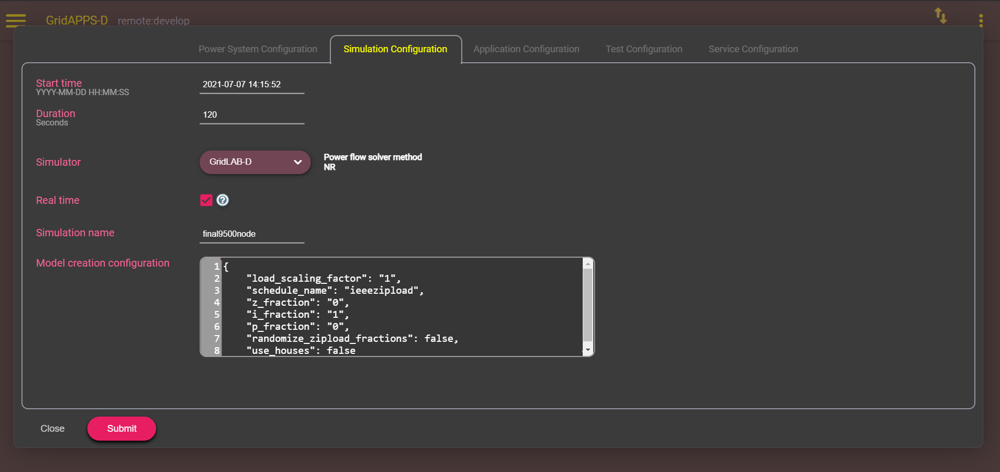
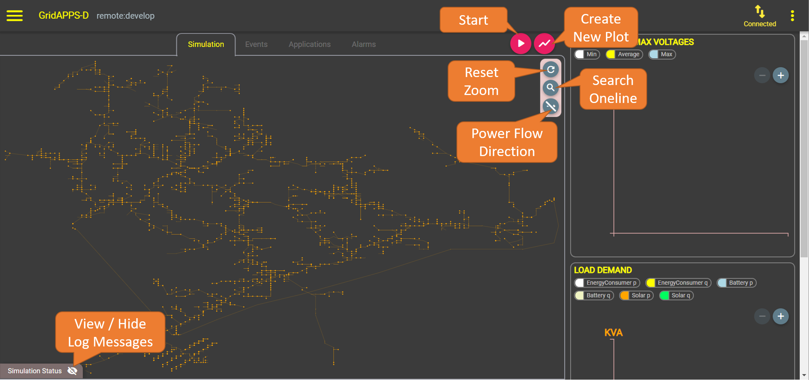

Using the GridAPPS-D Viz¶
Accessing the GridAPPS-D Viz¶
Start the Platform using the ./run.sh and ./run-gridappsd.sh scripts as explained in Running GridAPPS-D. After the Platform is running, open your browser and navigate to localhost:8080 for desktop installations and your.server.ip.address:8080 for cloud installations.
You should see a splash screen with login options for various user roles. The default username and password combinations are available in the pnnl.goss.core.security.userfile.cfg configuration file.

If the ./run-gridappsd.sh script inside the GridAPPS-D docker container has not been started or has been interrupted, you will see a server connection error when attempting to log in:

After logging in, there are two menus in the top left and right corners. On the left is the main menu for using the VIZ features. On the right is the settings menu.

The settings menu contains options for changing the color theme from dark to light, the time zone used, and level of logging detail.


On the left is the main menu, which has options for creating simulations, comparing simulations, exploring the databases, and passing API calls through the STOMP client. Each of these will be explained in detail below.

Creating a Simulation¶
To create a simulation from the GridAPPS-D VIZ, select Configure New Simulation from the main menu:

Power System Configuration¶
The first tab provides a set of menu options to select the desired distribution feeder on which the simulation will run. Detailed descriptions of the available test feeders inlcuded by default are provided in Available Models.

Simulation Configuration¶
The next tab provides several options for specifying
simulation start time (which determines weather and load data used)
simulation duration in seconds
simulator used
real-time
If checked, 1 sec of clock time equals 1 sec of simulation time
If unchecked, the simulation runs as fast as possible (used for generating AI training data)
simulation name
model configuration
The model creation configuration textbox enables modification of the model from the default configuration, inlcuding opening/closing switches, changing DER setpoints, and changing the load profile. Details of the syntax for custom configurations is explained in simulation_config settings

Application Configuration¶
The application configuration tab enables selection of which app should run during the simulation. The GridAPPS-D VIZ allows for selection of just one app at a time. Two or more apps may be run simultaneously by starting the simulation through the Simulation API and specifying the desired apps using the application_config key

Test Manager Configuration¶
The Test Manager is used to create realistic operational events during the course of the simulation, including faults, communication outages, and custom event scripts.
For large models (such as the IEEE 8500 node and 9500 node test systems), it may take several seconds for the model dictionary to load. While the power system model is being queried, a splashscreen will be displayed.

Communication outages¶
The first option is to create communication outages for both SCADA measurements and equipment control commands by clicking the CommOutage radio button.
Equipment control commands can be blocked by specifying an Input Outage with options for
start time
end time
all equipment (outages all commands for all equipment if checked)
equipment type
equipment name
affected phases
CIM control attribute
To add an Input Outage, specify the desired options, click the + button, and then click the Add event button at the bottom of the page. The speficied outages will then be displayed on the right side under the CommOutage tab.

Measurement sensor outages can be created with an Output Outage with options for
all measurements (all sensors outages if checked)
equipment type
equipment name
affected phases
measurement type (voltage, apparent power, position)
To add an Output Outage, specify the desired options, click the + button, and then click the Add event button at the bottom of the page. The speficied outages will then be displayed on the right side under the CommOutage tab.

Equipment Faults¶
The next option is to create a fault on any class of equipment in the model by clicking the Fault radio button. Options will appear to select the
equipment type
equipment name
phases to be faulted
type of fault
start time
end time
fault impedance
After setting the values, click the Add event button. The fault will be displayed on the right side of the screen under the Fault tab.
When the simulation reaches the event start time, the logical fault simulator traces the fault up to first upstream switch and opens that switch to clear the fault.
Note: The GridLAB-D logical fault simulator currently may not process faults in meshed networks correctly and fail to open the appropriate set of switches to clear the fault. This is a known bug with a workaround to open the appropriate switches using a custom Test Manager event file.

Custom Event Files¶
Custom event messages can be written in format of a CIM Difference Message. The format of custom event files is explained in test_config settings.
Event files can be uploaded by clicking the cloud-shaped button and selecting the desired files to be uploaded from your local machine. Click Open to upload each file. The custom event will then be displayed under the Command tab.

2.5. Service Configuration¶
The last tab is the GridAPPS-D service configuration. This enables selection of particular services that should be run along with the simulation, such as the Sensor Simulator or DNP3 service.

After selecting all desired simulation parameters, click Submit to start the simulation.
Running a Simulation with VIZ¶
After clicking Submit, the GridAPPS-D VIZ will generate a new oneline diagram for the desired feeder. Large models, such as the IEEE 8500 and 9500 node test systems, will take several seconds to load. A splashscreen will be displayed while the oneline diagram is being created.

The oneline diagram will then appear in the main window under the Simulation tab.
Across the tab are three more tabs for events loaded into the simulation, applications configured to run, and SCADA alarms received during the simulation.
Simulation Tab¶
The Simulation Tab contains options for viewing and controlling equipment in the feeder model.

Starting, Pausing, and Stopping a Simulation¶
To start the simulation, click the start button shown above. A “Simulation is starting” message will be displayed while the CIM model is imported, converted, and configured to run with the specified simulation parameters.
After the simulation starts, a unique simulation ID will be created and displayed in the top left corner. This ID is used by applications to communicate with the correct simulation (as multiple simulations may be running simulateously).
The simulation may be paused or stopped using the pause and stop button in the top right corner of the simulation window.

Viewing equipment names¶
To view the names of devices in the feeder, zoom in using the mouse wheel and hover over the desired piece of equipment. Its name will be displayed below.

Opening and Closing Switches¶
Closed switches are displayed as a red breaker square. Open switches are green.
To open or close a switch, left-click on the square and select the desired state from the menu. Click Apply


[applications-tab](images/1.5/
Alarm Tab¶
The


Alarms can be acknowledged and removed from the table by clicking the check mark button on the far left of each row.
The alarm location can be viewed by clicking on the magnifying glass button. This will switch to the Simulation tab and the particular piece of equipment will be highlighted with an expanding circle.